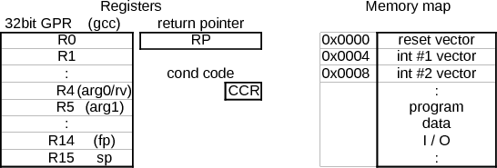
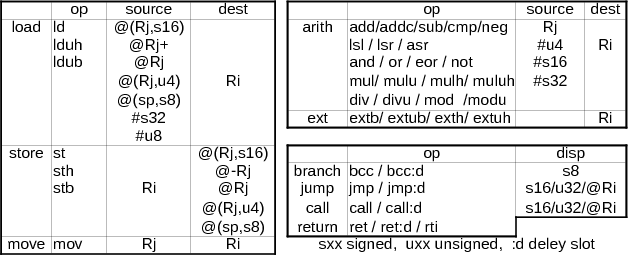
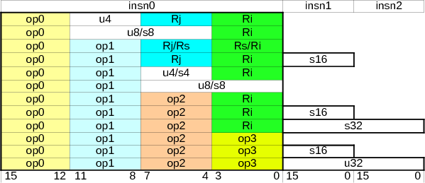

CPU
mm-6/ハードウェア
CPU
mm-6 のCPUはオリジナル設計の32bit RISC プロセッサです。SRプロセッサ と名付けました。
開発の経緯
FPGAでマウスを作って見ようと思い立った時点で、FPGAに組み込むプロセッサを探してみました。安価なFPGA(Xilinx社 Spartan シリーズ／Altera社 Cyclone シリーズ等)に入るCPUコアは各社提供していますが有償です。(2012/8 追記：最近は Xilinx microblaze、Altera NIOS は無償になっています）
www.opencores.org にはフリーのプロセッサがいくつも登録されており、その中から SH-2 互換の Aquarius*1を選んで試してみました。以下の様な手順です。
- gcc のソースを入手し、ターゲットCPUを sh2 としてクロスコンパイラをビルド
- Aquariusのソースを入手*2して Xilinx社の無償版開発ツール ise Web-pack で論理合成、デバッグ用ターミナルやI/Oポートをテスト環境に合わせて多少手直し
- テストプログラムをクロスコンパイルし、FPGAに組み込み
- FPGA xc3s400 のブレッドボード*3に書き込んでテスト
以上のテストで Aquarius は Spartan-3 XC3S400 にぎりぎり収まり、CPUのクロックは約30MHzまで動作可能なことがわかりました。多少の周辺回路を入れることはできそうですが、余裕はありません。
この作業をする中で、「TSU-GCC製作記」*4というページを知り、gcc 移植の可能性を知りました。sh2 クロスコンパイラのビルドを経験していたこともあり、何とか出来そうな気がして gcc を移植可能なオリジナルCPUを設計してみようと考えました。
設計方針
とはいえ、1からまったく新しいCPUのポーティングは私にはムリそうなので、既存のCPUを元に改造していく形でオリジナルの命令セットを作ることにしました。元にするCPUは富士通のfr30にしました。（移植コードが小さく、またアセンブラ、リンカなどの移植を容易にするツール cgen*5 を使っているなどの理由による）
fr30を参考にし、以下のような方針でCPUの命令セットを作りました。
- gcc の移植に必要な最低限の命令セットとする
- gcc でよく使われるスタックへのアクセス(load/store 命令のアドレッシング)は充実する
- ハード実装しにくい又はgcc移植しにくい命令は実装しない
- 命令は16bitを基本にする。オペランドは2つ
- 汎用レジスタは32bit x16本とし、うち1本をスタックポインタとする
- 他のレジスタは、リターンポインタとステータスレジスタのみ 特殊レジスタを使わない
同時に、新たに作った命令セットを実行する回路を設計します。
CPUを設計するに当たっては、書籍「コンピュータ・アーキテクチャ― 設計・実現・評価の定量的アプローチ」(ヘネシー＆パターソン著)を参考にしました。コンピュータの設計に興味がある方には必携です。
この本にしたがって、ベーシックな RISC タイプの5段パイプライン構成で設計することにしました。
コンパイラが使えないと実用的なプロセッサにはならないので、gcc の移植とCPUのハードウェア設計を同時に進め、完成を目指すことにしました。
CPU開発の流れ
以下、gcc移植とCPU開発の流れです。
- ターゲットfr30で gnuのbinutils(アセンブラ、リンカ等)、gcc、gdb を一からビルドする練習。binutilsとgdbはcgenを使ってcpu記述ファイルからビルドするツールチェーンを確認する
- 新命令セットでクロスアセンブラ、リンカ、gccを作る
- fr30 の命令を参考に、命令セットを作る
- cgen のcpu記述に新たに定義した命令セットを記述→binutilsをビルド／インストール
- gcc のcpu記述を新命令を使って記述し、ビルド／インストール
- cgen を用いて gdbをビルド／インストール
- クロスgccでテストプログラムをコンパイルし、クロスgdbでシミュレーション実行 → binutils,gcc のcpu記述のデバッグ
- CPUのハード構成を設計し、パイプラインまで正確にエミュレートしたモデルをＣ言語で作成→テストプログラムを実行
Ｃモデルとクロスgdbをつき合わせてＣモデルをデバッグ
この時点でハード実装容易さの観点で命令セットの修正を行った→2. へ戻る - ＣモデルをリファレンスとしてHDLを記述、Ｃモデルの実行トレースとHDLのシミュレーションをつき合わせてHDLをデバッグ
Ｃモデル用に作成した命令のテーブルを使用してHDLの命令テーブルを自動生成することでミスを防ぐ
HDLのシミュレーションにはiseのシミュレータisimを用いた
デバッグにはHDLの中で実行トレースのテキスト出力をするのが有効 - xilinx ise でHDLから回路合成、FPGAにプログラム、テストプログラムを実行してデバッグ
ゲートレベルシミュレーションで合成の不具合追跡
実際の移植作業では、gccよりもbinutils/gdbの方があちこちのソースに手を入れる必要があり、大変でした。fr30はメンテナンスがされていないようで、いくつかバグがありましたが、そのバグを追跡する過程で新命令セットの開発デバッグ手順を作って行くことが出来ました。
SRプロセッサの概要
SRプロセッサのハード構成概要です。
- 命令バスとデータバスが独立したハーバードアーキテクチャ
メインメモリ(FPGA内のSRAM32kB)をデュアルポートにして命令とデータを同時にアクセス - パイプラインは Fetch/Decode/Exec/MemoryAccess/WriteBack の5段
- レジスタ競合時などのストールはハードウエアで行う(gccで対策する方法がわからない)
フォワーディングを積極的に行ってできるだけストールが起こらないようにした
（ただし、このために論理段数が増え、クリチカルパスが長くなってクロック周波数が制限される。ストールを許してクロックを上げることが出来ればその方が良いかもしれない） - ブランチ、ジャンプなどはディレイスロット付き命令を用意
- 32bitの乗算(1クロック)と除算(18クロック)はハードで実装
- ハード割り込みは1系統のみ実装
- Ｉ／Ｏはデータバス上に直接接続
開発したCPUを、XC3S400 FPGA に実装したところ、Aquariusと同程度のハード規模と実行速度(30MHz)が得られました。
プログラミングモデル概要
命令セット概要
トータル108命令（アドレシングモードの組み合わせには制限がある）
命令タイプ
1ハーフワード命令を基本にしているが、2/3ハーフワード命令を追加